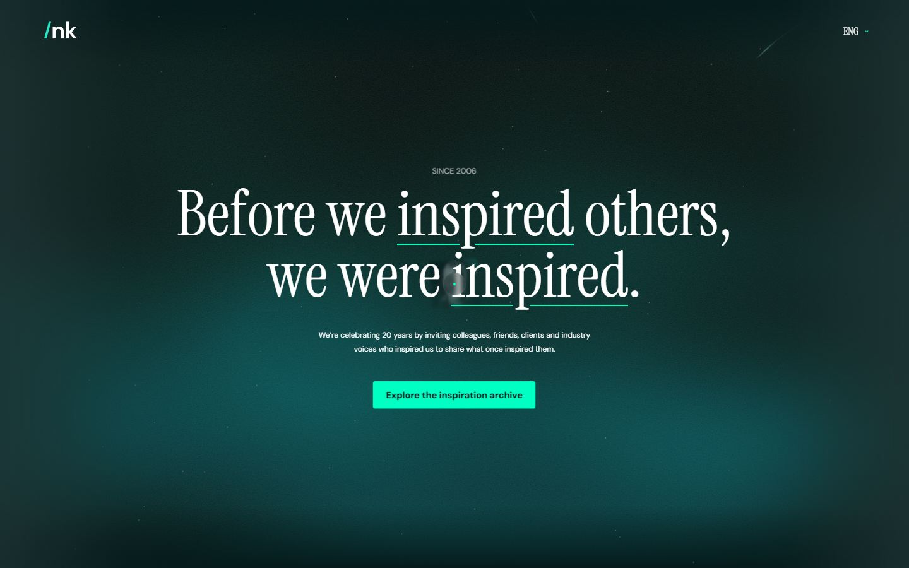
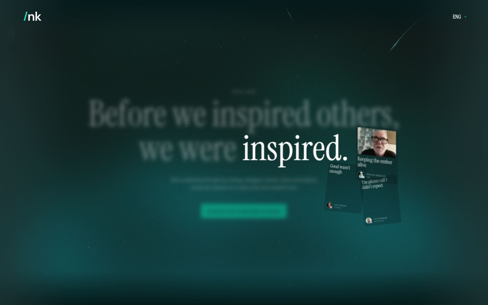
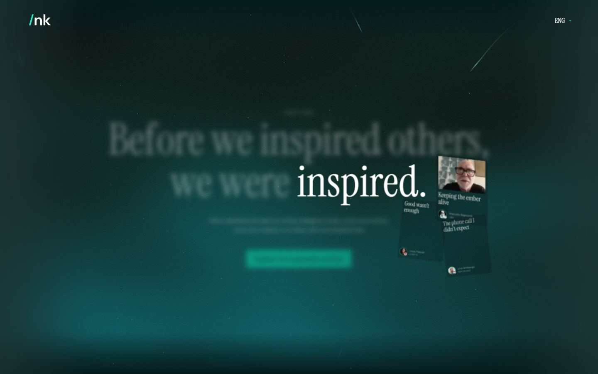
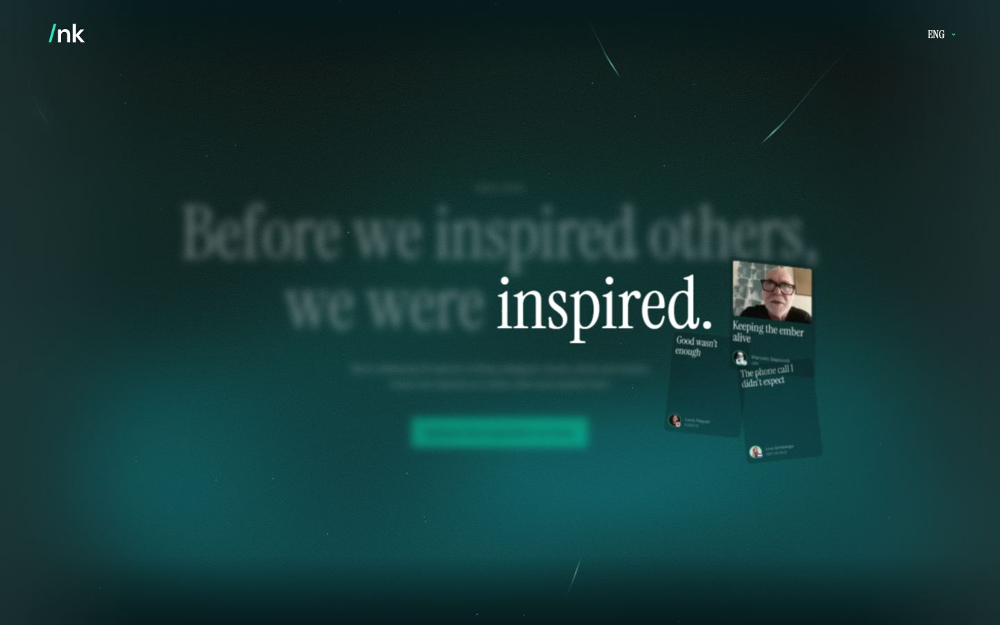
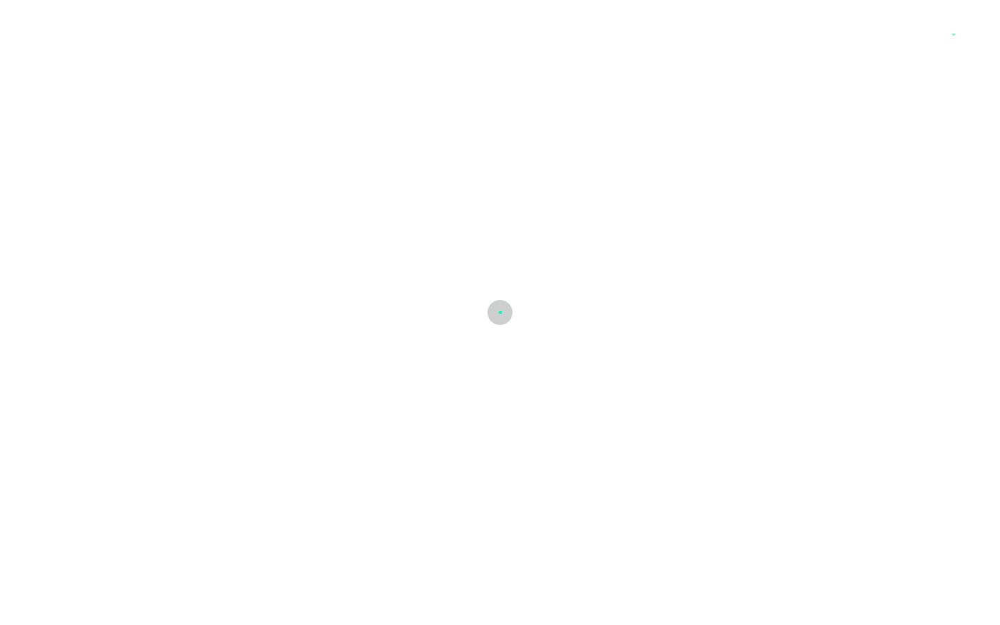
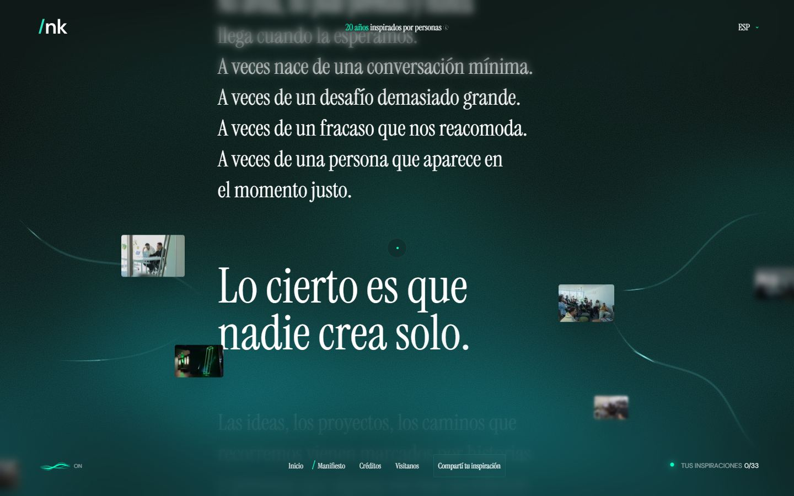
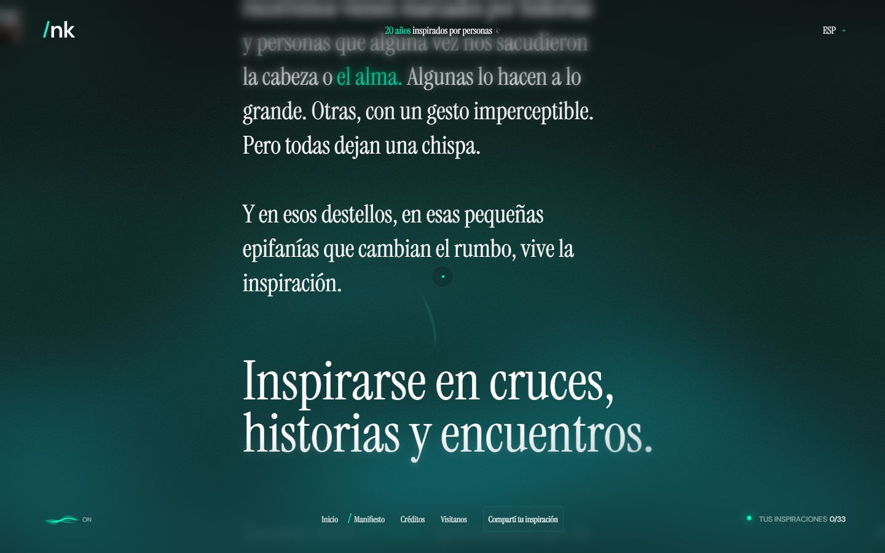
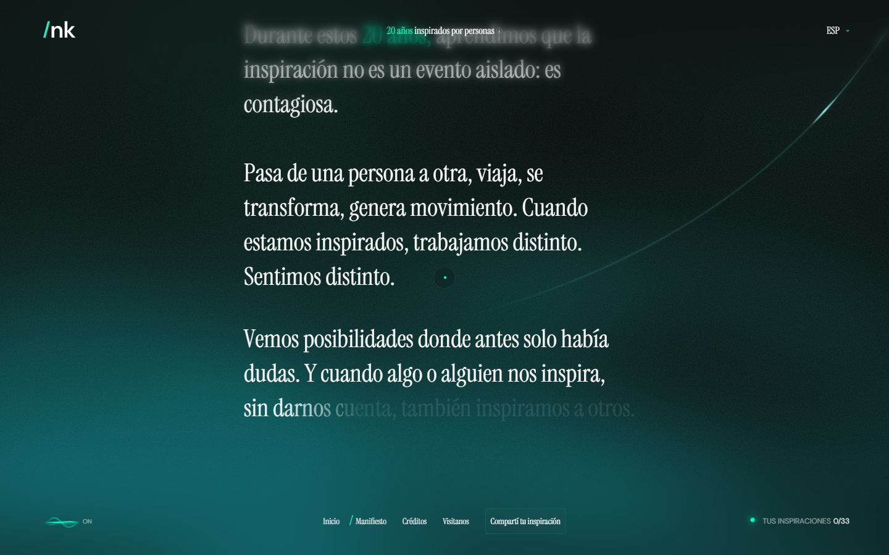

20 Years Inspired by People
Captures desktop

Pages internes








Mobile
Stack détectée
Barba.js, GSAP, Howler (audio), Lenis, Lil-GUI/Tweakpane (debug), Lottie, Next.js, React, React Three Fiber, Rive, ScrollTrigger, SplitText/SplitType, Three.js, Virtual scroll, WebGL
Versions : GSAP 3.11.0 · Three.js r?
Shaders GLSL personnalisés extraits : 14 (voir shaders.glsl)
Design tokens
Couleurs (fonds, pondérées par surface)
#00ffc2 · #ffffff · #070b0a
Couleurs de texte
#ffffff · #041819 · #000000
Polices utilisées (par volume de texte)
Instrument Serif · DM Sans
Fichiers de police chargés
Typographie
| Élément | Police | Taille | Graisse | Interligne | Interlettrage | Casse |
|---|---|---|---|---|---|---|
| h1 | "Instrument Serif", "Instrument Serif Fallback", A | 100px | 400 | 97px | normal | none |
| h2 | "Instrument Serif", "Instrument Serif Fallback" | 44px | 400 | 45.76px | normal | none |
| h3 | "Instrument Serif", "Instrument Serif Fallback", A | 58px | 400 | 60.32px | normal | none |
| p | "DM Sans", "DM Sans Fallback" | 13px | 400 | 12.35px | normal | uppercase |
| a | "Instrument Serif", "Instrument Serif Fallback", A | 16px | 400 | 24px | normal | none |
| button | "DM Sans", "DM Sans Fallback" | 14px | 700 | 21px | normal | none |
| body | "Instrument Serif", "Instrument Serif Fallback", A | 16px | 400 | 24px | normal | none |
Échelle des tailles de texte
16px (97) · 12px (94) · 8px (35) · 24px (34) · 100px (33) · 14px (17) · 10px (10) · 13px (9) · 48px (5) · 11px (4) · 44px (2) · 58px (1) · 15px (1)
Arrondis
10px · 3.35544e+07px · 5px · 8px · 50% · 3px · 4px
Transitions CSS fréquentes
Points de rupture (media queries)
1024px · 768px · 1280px · 640px · 1536px · 700px · 769px · 1200px · 1025px · 1279px · 719px · 1023px
Animations CSS (@keyframes)
carousel-selection-ring-spin, site-noise-grain
Variables CSS (:root)
--font-sans: ui-sans-serif, system-ui, sans-serif, "Apple Color Emoji", "Segoe UI Emoji", "Segoe UI Symbol", "Noto Color Emoji"; --font-mono: ui-monospace, SFMono-Regular, Menlo, Monaco, Consolas, "Liberation Mono", "Courier New", monospace; --color-gray-50: lab(98.2596% -.247031 -.706708); --color-gray-200: lab(91.6229% -.159115 -2.26791); --color-black: #000; --color-white: #fff; --font-weight-normal: 400; --font-weight-medium: 500; --font-weight-bold: 700; --leading-snug: 1.375; --ease-in: cubic-bezier(.4, 0, 1, 1); --ease-out: cubic-bezier(0, 0, .2, 1); --ease-in-out: cubic-bezier(.4, 0, .2, 1); --blur-xs: 4px; --blur-md: 12px; --aspect-video: 16 / 9; --default-transition-duration: .15s; --default-transition-timing-function: cubic-bezier(.4, 0, .2, 1); --default-font-family: var(--font-sans); --default-mono-font-family: var(--font-mono); --font-dm-sans: var(--font-dm-sans); --font-instrument-serif: var(--font-instrument-serif); --color-brand-green: #00ffc2; --color-galaxy-green: #070b0a; --background: #0a0a0a; --foreground: #ededed;
Structure de la home
Hauteur : 900 px — 1613 nœuds DOM — canvas 7, vidéos 1, images 96
| # | Bloc | Hauteur | Titre | Médias |
|---|---|---|---|---|
| 1 | div .relative flex min-h-0 w-full flex-1 flex | 900 | Antes de inspirar,fuimos inspirados. | 90 |
Navigation :
Boutons / CTA : enviar
SEO
Plan des titres
Performance (mesure locale, Chrome headless, connexion non bridée)
Mobile
Fichiers
captures/ : arrivée, scroll desktop (1440×900), pleine page, pages internes, mobile (390×844 @2x) ; vidéo de scroll dans la release GitHub « videos » (lien en haut de fiche)page.html : DOM rendu · styles.css : CSS chargé · scripts/ : JS chargé (index dans _index.json) · shaders.glsl : shaders extraits · rea-bundle.json : analyse REA du bundle (chunks, routes, endpoints)